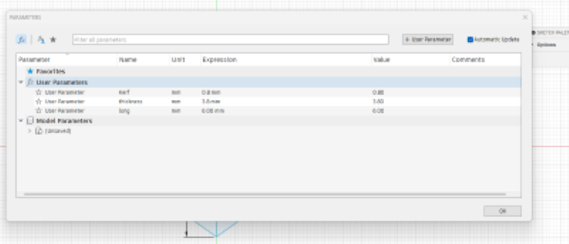
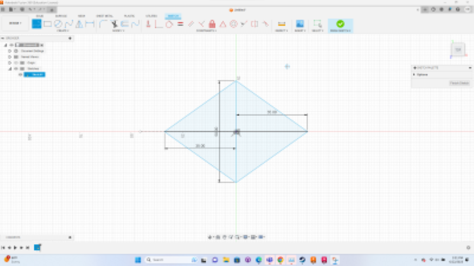

Laser cutting is a very fast form of digital fabrication that is capable of printing different materials in seconds. The laser cutter only prints in 2d but using press fit designs it is possible to make 3d objects. In order to make a press fit design work the thickness of the material has to match the width of the notch. The notch is the hole designed to fit around the material to connect different pieces.  In the first ideration of the design I made, I presumed the Kerf of the laser cutter was .8 milimeters. The kerf is the material that the laser cutter takes off from the material that goes unaccounted for in a design.  Using the sketch tool I was able to make the 2d cad. The deimons of the My first iteration of the design was rather large for my taste.